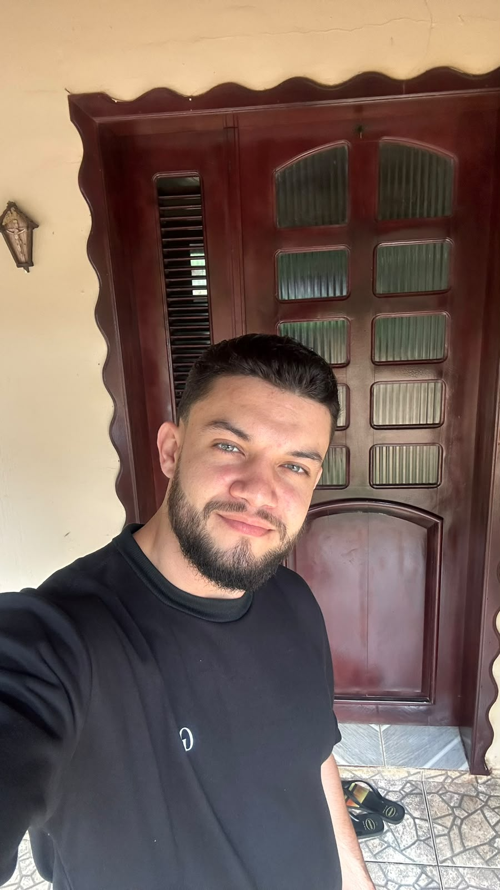

QUEM ESTÁ POR TRÁS DO PROJETO
Aprender.
Construir. Evoluir.
Conhecimento se transforma quando colocamos as ideias em prática.

SOBRE O AUTOR
Pedro Henrique de Oliveira Araújo
Meu nome é Pedro Henrique de Oliveira Araújo. Sou estudante da área de Tecnologia e também possuo formação em Administração e estou concluindo minha graduação em Ciências Contábeis.
Tenho interesse por tecnologia, negócios, administração, finanças e desenvolvimento de projetos. Busco ampliar meus conhecimentos na área de tecnologia e aprender novas ferramentas que possam contribuir para minha formação acadêmica e profissional.
Este site foi desenvolvido como atividade da disciplina de Desenvolvimento Web I, utilizando HTML para estruturar as páginas e apresentar os conteúdos de uma loja de roupas.
Voltar para a página inicial →